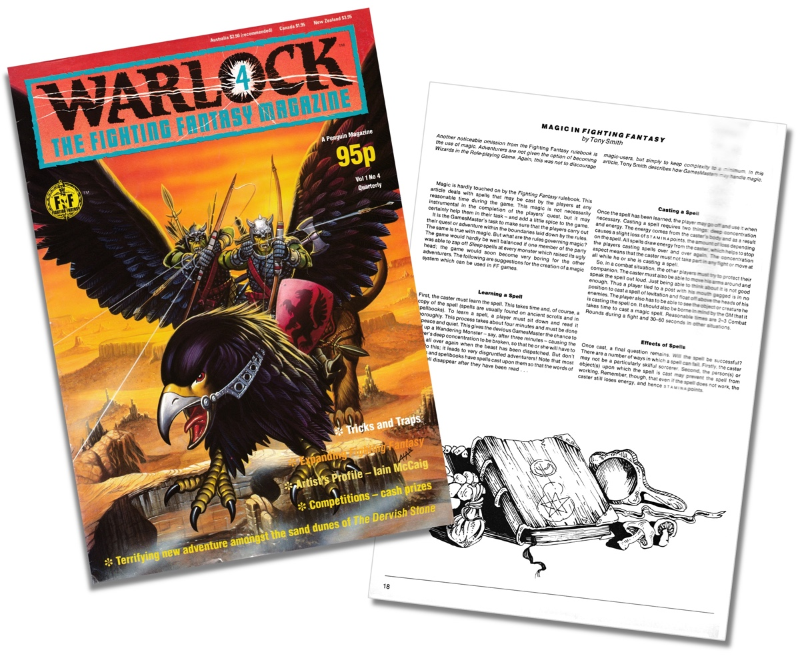
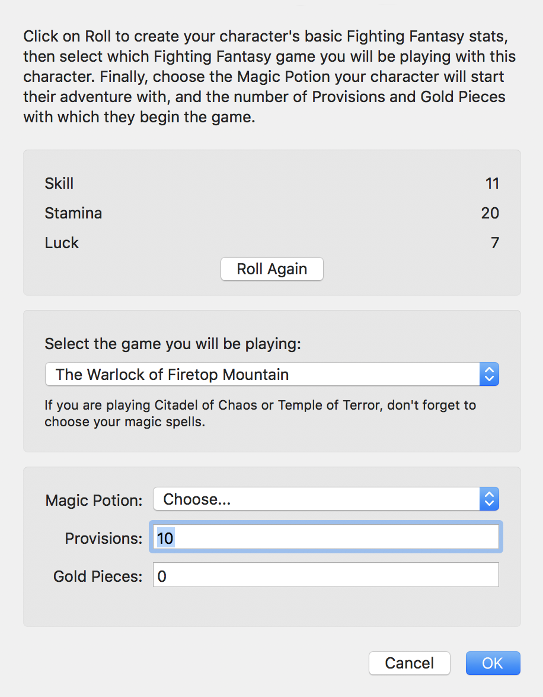
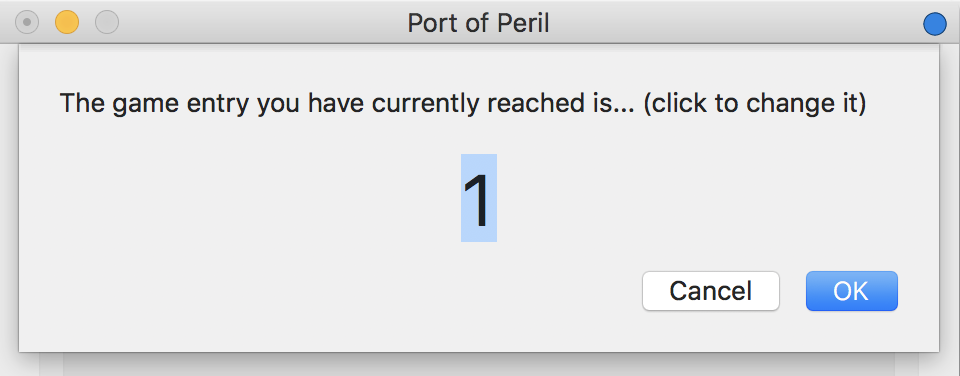
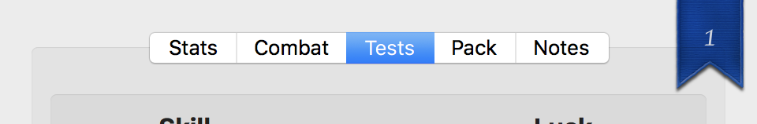
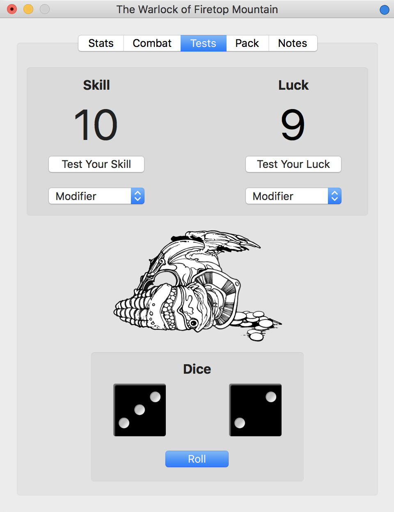
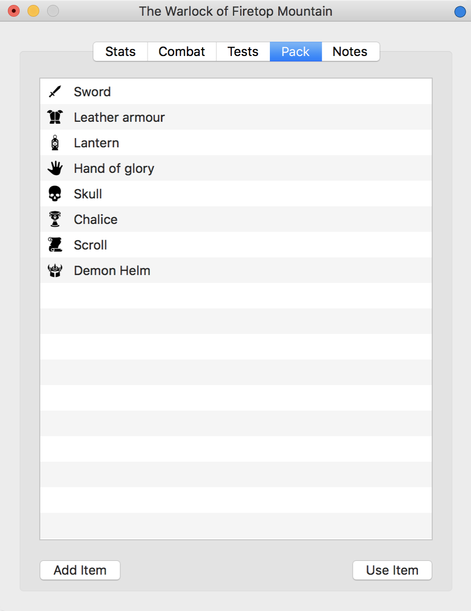
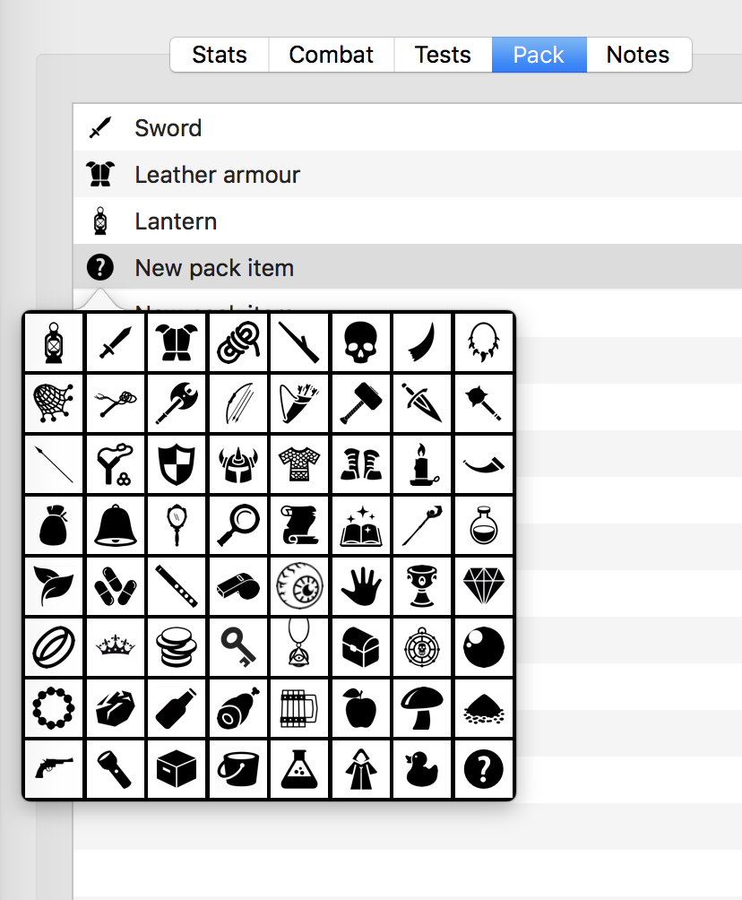
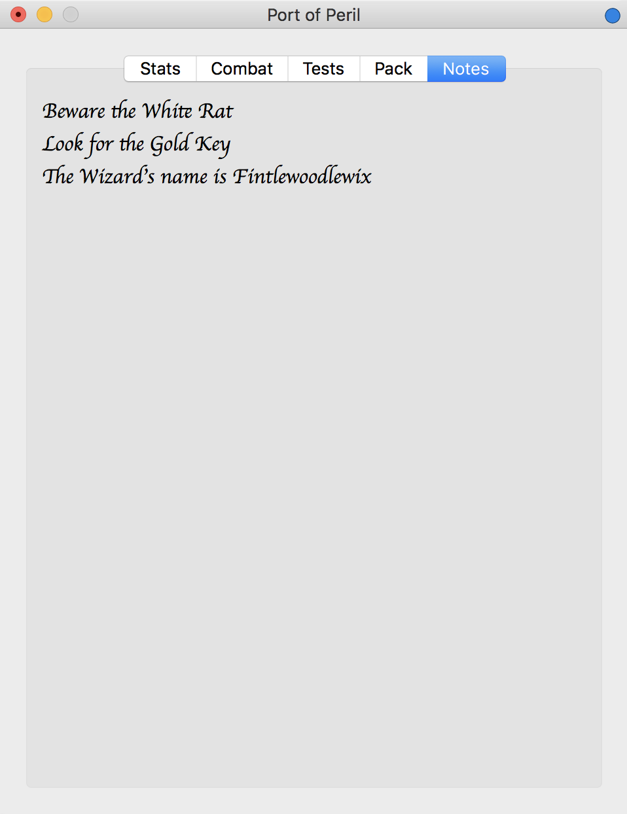

FightingFantasy Game Manager
Latest Release: 3.0.15
About Fighting Fantasy Game Manager
This is a Swift 4 port (for macOS) of a much older Objective-C version written circa 2003 following the 20th anniversary of the publication of Penguin Books' Fighting Fantasy gamebook series and the revival of the books by Icon Books. The concept of a program to help players with their games — setting up characters, handling combat, managing their backpack contents, testing for Luck, etc. — goes back to a mid- to late 1990s Real Basic classic Mac OS version which, in turn, was a redevelopment of an original implementation for the Dragon 32 written around 1985, while the gamebooks were still being published by Penguin's Puffin imprint.
Coding up the Swift version was solely about me learning Swift, and the recent, third revival of the gamebooks — this time by Scholastic — is entirely coincidental, but certainly not unwelcome. There's even some new ones out, Port of Peril and Gates of Death. I'll support it in the game manager if it makes use of new rules or features.
Incidentally, not all of the gamebooks are supported, I'm afraid, only those I have played or plan to. So if you have a favourite that's not included, consider it a tutorial exercise: an opportunity to expand on the code included in this repo.
Fighting Fantasy the property of Steve Jackson and Ian Livingstone, and reference to it here and in the code is on a notionally fair-use basis. Although my version includes imagery from the books, it is not included in the GitHub archive. Quite apart from any legal reasons, I owe it to Jackson, Livingstone and all the artists whose work gave me so much pleasure in the mid-1980s and again in the 2000s and 2010s, not to treat their work as a commodity to be downloaded. And as a published Fighting Fantasy writer...

You can find out more about the gamebooks at FightingFantasy.com.
For the application code, please visit the GitHub repo
page.
How to Use Fighting Fantasy Game Manager
Using the Game Manager should be intuitive: it replicates the Character and Monster Encounter Sheets found in the gamebooks, and provides game mechanics, including testing your Luck and Skill, and engaging in combat. There is a section for recording the items you have in your pack, and another for making notes. You can save your character for future sessions, and set a digital bookmark to record your current place in the gamebook.
Rolling a New Character
Select New Character from the File menu or New Game from the intro screen. Stats will be rolled for you, but you can always roll again! Select the gamebook you will be playing and, on that basis, which, if any, potions, provisions and Gold Pieces you start out with.

Click OK to continue.
Choosing a gamebook sets up the Game Manager accordingly: some games have different features — magic in Citadel of Chaos, Fear and madness in House of Hell — and the Game Manager will present these as required. Look out too for the Game menu, which will contain game-specific actions that a given gamebook will offer on certain pages. Game Manager will tell you when the Game menu is enabled.
Playing the Game
The Stats tab provides a readout of your Skill, Stamina and Luck (and their initial values) and allows you to change these as required. It also lets you add and eat Provisions, add and spend Gold Pieces, and drink your Magic Potion, if you have one (and you have drinks left).
Click the blue dot in the top right corner to set the bookmark to the current gamebook entry. When you put your mouse point on the dot and no bookmark is set, the dot will show a plus sign. Click to set the bookmark:

When you set a bookmark, a tag appears — click this to change the bookmark. Click the blue dot again to clear the bookmark.

The Tests tab is where you Test Your Luck. If the gamebook asks you to roll two dice and compare the result to your Skill score, you can do that here too, using Test Your Skill. Apply modifiers to the rolls as indicated by the gamebook, eg. reduce your Skill roll by two. A pair of dice are included for more general one- or two-dice rolls.

Fighting Monsters
The Combat tab is where you fight monsters — up to three at once. Enter each beast’s Skill and Stamina into the spaces provided and then select which ones will fight in the next combat round. This will be one monster for one-at-a-time battles or multiple monsters if you are fighting them all at once. Which monster you intend to try and hit is selected by clicking the Target box.
Finally, select any modifiers you should make to your Attack Score or the monster’s attack roll, eg. +1 for a magic sword, or -2 because you have no weapon in hand, as directed by the gamebook or the weapon you are carrying.
Click Strike Now! to launch your attack. After the combat round has been played out, you can click Use Your Luck if you wish to try and reduce damage done to you or increase the damage you have done to your target.
Your Possessions
The Pack tab allows you to track the items you have collected during your game. Click Add Item to add an item to
your pack and then double-click on the text

You can click on the icon to change the item’s image — now or at any time.

Taking Notes
The Notes tab provides a simple jotter for you to record names, places and clues during the game. Just click and type.

Release Notes
3.0.15
- Add Yaztromo’s Aid option to Game menu (Port of Peril).
3.0.14
- Fix Luck Test’s Luck score decrement.
- Correctly select the icon (in the pack item popover) of the pack item clicked upon.
3.0.13
- Add the Notes tab.
- Add control-click to bump stats to max.
- Stop sheets blocking further sheets.
- Fix character save bug.
3.0.12
- Re-set New Character game popup Sorcery! entries.
- Add Temple of Terror.
- Refactor Stats tab image code.
3.0.11
- Add start menu.
- Update graphics.
- Improve About and Help sheet dismissals.
3.0.10
- Add splash screen at startup.
- Better sheet handling.
Source Code
You can view Fighting Fantasy Game Manager’s source code at GitHub.


Site and software copyright © Tony Smith, 2014-19
Fighting Fantasy is copyright © 2016-19, Steve Jackson and Ian Livingstone